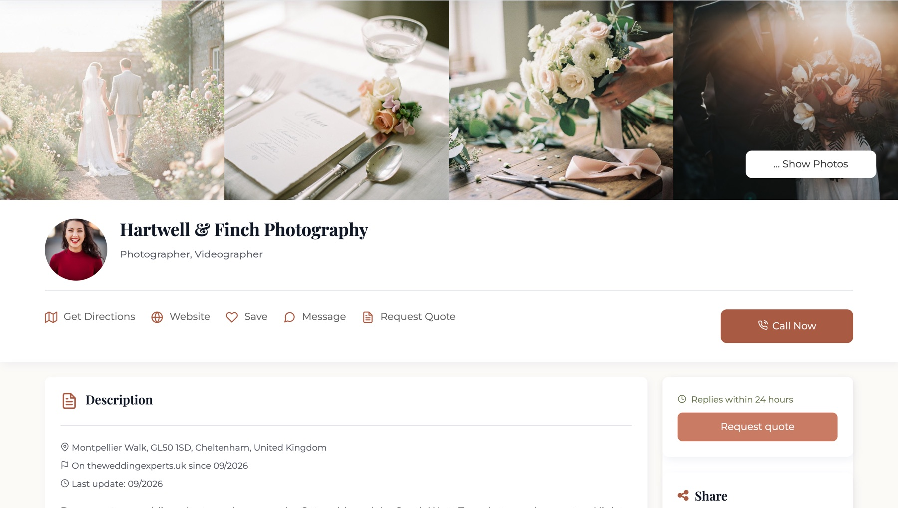
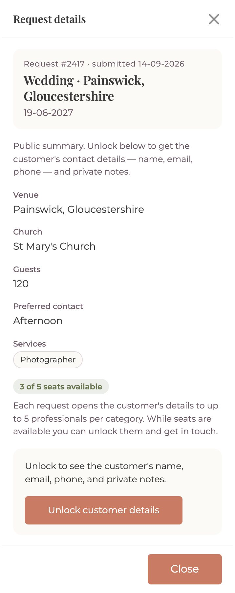

Three steps between you and the couples.
-

Register your business
Tell us what you do and the areas you cover. We build your profile from the details you send, with your photos, services and starting price.
-
Jun192027
Request #2417 · submitted 14-09-2026 NEW
Wedding
Painswick, Gloucestershire
120 guests St Mary's Church Contact: AfternoonPhotographer 3 of 5 openAnonymous until unlockedExample
Couples tell us what they need
Their date, place, guest numbers and the services they are looking for. Every couple is verified by mobile and email, so the requests you see are real.
-
Example data

We connect you with the couple
Each request opens to five professionals per category at most, so you are not one of hundreds replying to the same couple. Unlock it and get in touch, or take their call from your profile.
Be there the day couples arrive.
Professionals who register before launch are ready from the first day, when couples start searching and the names already listed are the ones they find.
-
Now
We build your profile from the details you send, at no cost.
-
Launch day
Couples search the UK site and find you in the results from the first day.
-
First season
You keep priority placement in your county through the season.
Questions professionals ask.
Does it cost anything?
Registering and listing your business is free, and stays free. Paid plans add a larger gallery, reviews, chat and higher placement, and the first three months on a paid plan cost nothing. UK prices will be shared before launch.
How many professionals see each request?
Five per category at most. Once those seats are taken, the request closes for that category, so a couple hears from a few professionals rather than dozens.
Do I have to send quotes in the app?
No. We put you and the couple in touch: unlock the request and message them, or take their call. How you price is up to you.
Who builds my profile?
We set it up from the details you send us. After that you update photos, prices and services yourself, whenever you like.
I don't have a website. Can I still join?
Yes. A website or social page is optional. Your profile can be the place couples see your work.
Claim your free profile.
Three details and we do the rest. We build your profile at no cost and tell you the moment couples can find you.
Thank you. You are on the list.
We will be in touch at the address you gave us, well before we open to couples.
That did not go through.
Please try again in a moment. If it keeps failing, your details have not reached us.